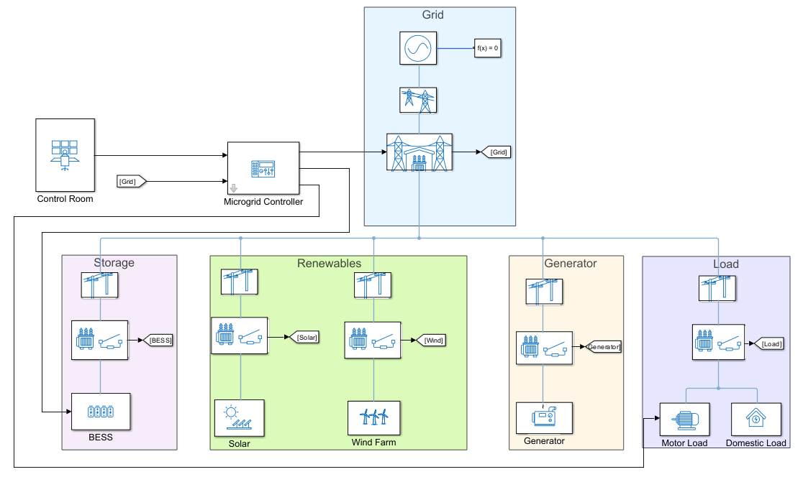
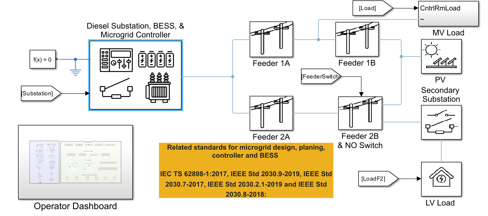
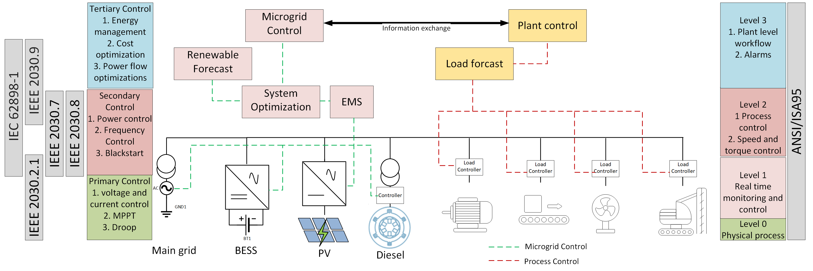
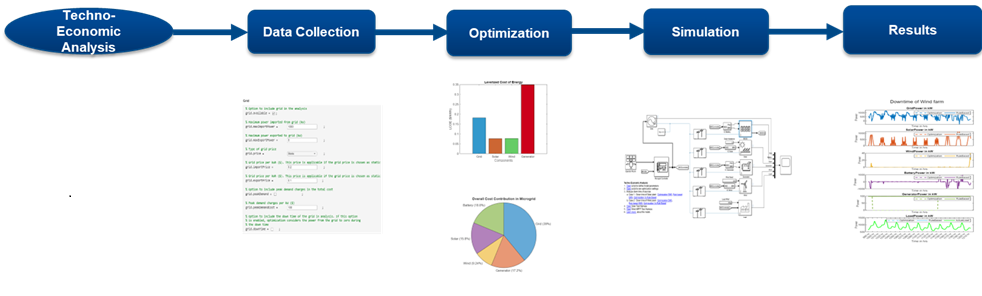
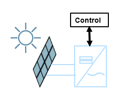
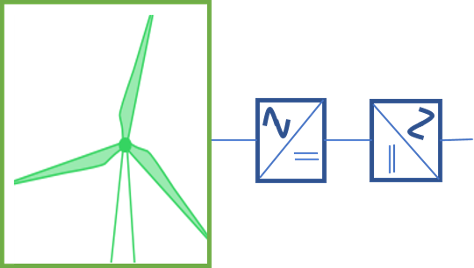
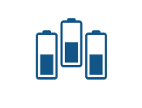

Overview
The International Council on Large Electric Systems (CIGRE) has defined microgrid as "electricity distribution systems containing loads and distributed energy resources, (such as distributed generators, storage devices, or controllable loads) that can be operated in a controlled, coordinated way either while connected to the main power network or while islanded".
There are different types of microgrid applications, including residential microgrids, remote microgrids, industrial microgrids, and many more. The system structure, the control philosophy, and the aspect of stability in a microgrid vary depending on the application. Depending on the grid connection, operation mode, control topology, types of distributed generation, network parameters, and power quality requirement, the microgrid design varies significantly among different applications [1].
There are different microgrid standards which provide necessary guidance in planning, design, operation, and microgrid controller functions. [2-7]
Keywords: Microgrid Components, Microgrid Control, Remote Microgrid, Industrial Microgrid, Techno-Economic Analysis
Get Started
Double-click on the MicrogridDesignWithSimscape PRJ file (in the root folder) to setup the project and get started.
Workflow
Click on the hyperlinks to navigate to the application workflows or live-scripts. This repository includes the following design solutions and components:
Microgrid Control
Using the above standardized components, a complete microgrid model is constructed in this repository. Each component follows consistent electrical and control interfaces, which allows sources, storage units, and controllers to be combined into different topologies without redesigning individual subsystems. The resulting model demonstrates how the microgrid responds to load changes, manages renewable variability, performs fault handling, and maintains reliable operation across a range of operating scenarios.

Control of a Hybrid Microgrid
Learn how to build and control a hybrid microgrid with multiple distributed energy resources.
Remote Microgrid
Microgrids developed in remote places ensure reliable and uninterrupted power. The microgrid controller ensures economic and sustainable energy mix while maximizing fuel saving with stable renewable energy integrations. The planning objective includes power reliability, renewable power usage, and reduction in diesel consumption. The key index for economic benefits includes life cycle cost, net revenue, payback period, and internal rate of return.

Design, Operation, and Control of Remote Microgrid
Learn how to develop, evaluate, and operate a remote microgrid with optimized renewable integration.
Design of Stable Industrial Microgrid
This design solution shows how to develop and operate a stable industrial microgrid. In an industrial microgrid, you must ensure the system meets the planning objectives, minimize the downtime, provide faster system reconfiguration during faults, and optimize the costs. The electrical design covers the voltage selection, network structure, and grounding while the automation design ensures the system protection, monitoring and communication.
In this solution, two main grids connect through two primary substations. Each substation has one BESS unit and one microgrid controller. The industrial grid operates as two separate microgrids connected through a normally open switch. Each microgrid asset receives commands from the microgrid controller and sends key measurements to the control room.

Design of Stable Industrial Microgrid
Learn how to develop, operate, and evaluate an industrial microgrid against various standards.
Perform Techno-Economic Analysis of Microgrids
Techno-economic analysis of microgrids is a comprehensive study that integrates technical performance and economic viability to assess the feasibility and effectiveness of different microgrids. Microgrids comprise multiple distributed energy resources (DERs) including solar panels, wind turbines, generators, combined heat and power (CHP) plants, energy storage systems, and controllable loads. To meet the energy demands while minimizing the overall cost, the techno-economic analysis identifies the optimal configuration and operation of these components.

Techno-Economic Analysis of Microgrids
Learn how to perform techno-economic analysis to identify optimal microgrid configuration and operation.
Components
The project utilizes library components available in Simscape™, Simscape Electrical™, and Simscape Fluids™ libraries. There are custom Simscape components used in this project. All such custom components, their documentation, source code, and test harness can be viewed by navigating to the Components folder in the project root directory.
Sources

Solar Plant
Photovoltaic solar plant model with MPPT control for microgrid integration.

Diesel Generator
Diesel generator model with governor and prime mover for backup power.
Storage

Battery Energy Storage System
BESS model for energy management, peak shaving, and grid stability.
Control
Grid-Following Controller
GFL controller for grid-connected operation of inverter-based resources.
Grid-Forming Controller
GFM controller for islanded operation and voltage/frequency regulation.
References
[1] R. Majumder, "Some Aspects of Stability in Microgrids," in IEEE Transactions
on Power Systems, vol. 28, no. 3, pp. 3243-3252, Aug. 2013, doi: 10.1109/TPWRS.2012.2234146.
[2] IEEE 2030.7-2017 - IEEE Standard for the Specification of Microgrid Controllers.
[3] IEEE 2030.8-2018 - IEEE Standard for the Testing of Microgrid Controllers.
[4] IEEE 2030.9-2019 - IEEE Recommended Practice for the Planning and Design of the Microgrid.
[5] IEEE 2030.2.1-2019 - IEEE Guide for Design, Operation, and Maintenance of
Battery Energy Storage Systems, both Stationary and Mobile, and Applications
Integrated with Electric Power Systems.
[6] IEC TS 62898-1:2017 Microgrids - Part 1: Guidelines for microgrid projects
planning and specification.
[7] IEC TS 62898-2:2018 Microgrids Part 2: Guidelines for operation.
[8] J. S. Gómez et al., "An Overview of Microgrids Challenges in the Mining
Industry," in IEEE Access, vol. 8, pp. 191378-191393, 2020, doi: 10.1109/ACCESS.2020.3032281.
Requirements
This project requires:
1. MATLAB®
2. Simulink®
3. Simscape™
4. Simscape Electrical™
5. Optimization Toolbox™
6. Stateflow®
7. Parallel Computing Toolbox™
Copyright 2022 - 2026 The MathWorks, Inc.